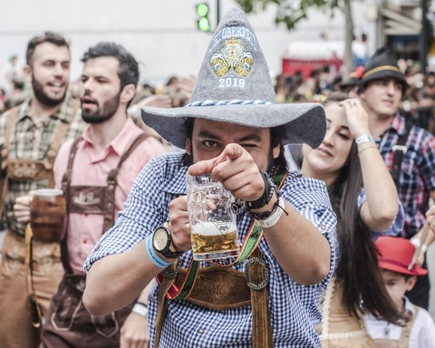

Blog
Oktoberfest
Del 17 de septiembre al 3 de octubre la ciudad de Múnich acoge una fiesta grande en Alemania, el Oktoberfest. Este festival, que tiene una larga historia, atrae alrededor de siete millones de visitantes cada año hasta el campo conocido como Theresienwiese (Prado de Teresa), donde se instalan grandes carpas, atracciones de feria y puestos de comida. Cada año, este evento, que suele durar entre 16 y 18 días, suma nuevas atracciones y carpas para deleite de locales y visitantes.
Historia:
Los orígenes de este festival se remontan a 1810, año en el que contraerían matrimonio el futuro rey Ludwig I y la princesa Teresa de Sajonia-Hildburghausen. Andreas Michael Dall'Armi, miembro de la Guardia Nacional de Baviera, tuvo la idea de celebrar una boda un poco diferente, así pues, pensó que la pareja debería ser honrada con una gran carrera de caballos. La ceremonia fue el 12 de octubre, y unos días después, el 17, la gran fiesta a la que asistió todo el mundo, en los terrenos situados frente a la entrada de la ciudad que más tarde tomarían el nombre de Theresienwiese en honor a la princesa. Este acontecimiento marcó el inicio del Oktoberfest, aunque en ese momento no hubiese carpas, atracciones de feria y cerveza.
Un año después todo el pueblo estaba de acuerdo en que querían más festejos como ese, por lo que en este caso el organizador fue la Asociación Agrícola Bávara, quien vio una oportunidad perfecta para destacar sus propios productos.
En el casamiento real probablemente hubo música, baile y algunos litros de cerveza. Sin embargo, la bebida todavía no era la protagonista del acontecimiento.
Recién en 1818, los organizadores decidieron colocar pequeños stands con cerveza para que los participantes se refrescaran.
Como el consumo empezó a aumentar, esos stands fueron reemplazados por las carpas gigantes que al día de hoy abastecen a los miles de sedientos y fanáticos de la bebida. Las cervecerías de la ciudad comenzaron a participar a partir de 1887.
Actualidad:
En la actualidad, el Oktoberfest se adelanta a septiembre para evitar el mal tiempo de la región en octubre. Se sigue haciendo en el mismo descampado donde ocurrió el casamiento y la cerveza, que la suelen acompañar con el pan pretzel, es la atracción principal.
Cuando el alcalde de Múnich abre a las 12 en punto el primer barril de cerveza, que debe ser preparada en la ciudad y cumplir una serie de requisitos, empieza el acontecimiento con juegos, música y disfraces.
Argentina:
En Argentina, la edición local del Oktoberfest se realiza en Villa General Belgrano desde 1963 y se conoce como Fiesta Nacional de la Cerveza. Declarada Patrimonio Nacional y de Interés Turístico por el Gobierno Nacional de ese país, durante los 11 días que dura la celebración, se reúnen más de 150 000 personas, se sirven 650 000 litros de cerveza, se consumen comidas típicas, se realizan fiestas y bailes de origen «austro-bávaro» en el Valle de Calamuchita y se elige a la Reina Nacional de la Cerveza.
Datos interesantes:
Debido a la Primera Guerra Mundial no se celebró entre 1914 y 1918. Al inicio del período de entreguerras, en 1919 y 1920, se celebró un festival al que se denominó «festival de otoño» (Herbstfest). Por culpa de la inflación desorbitada que se sufría, no hubo Oktoberbest en 1923 ni 1924.
Al menos en las ultimas ediciones del festival se bebieron aproximadamente 7 millones de litros de cerveza.
En el Oktoberfest no se puede beber cualquier cerveza. Los asistentes solo pueden degustar aquellas que cumplan con el Reinheistsgebot o ley de pureza cervercera. Se trata de un edicto real dictado el 23 de abril de 1516 por Guillermo IV de Baviera y que restringía el número de ingredientes con los que se podía elaborar la cerveza: agua, lúpulo y malta, (posteriormente se incorporó la levadura.
La tradición manda y las cervezas que se consumen en el Oktoberfest son las producidas por Augustiner-Bräun, Hacker-Pschorr-Bräu, Löwenbräu, Paulaner-Bräu, Spatenbräu, Staaliches Hofbräu-München, fábricas todas ellas de Münich con siglos de tradición y que cumplen a rajatabla el edicto real.
Con la ascensión del nazismo, la bandera blanquiazul de Baviera fue sustituida por la esvástica en 1933. Desde 1939 hasta 1945 se dejó de organizar a causa de la Segunda Guerra Mundial. Una vez acabada la guerra, se volvió a celebrar el Oktoberfest. Como consecuencia de la disposiciones vigentes durante la posguerra, no estaba permitida en rigor la venta de cerveza, tan solo de una bebida que no alcanzaba un contenido alcohólico del 2 %.
En 1887, cuando el Theresienwiese todavía no formaba parte de la ciudad, se reunieron allí por primera vez los Wirte (propietarios de las cervecerías) y los feriantes para inaugurar la fiesta. Desde entonces, la llegada de los Wiesnwirte ('cerveceros del prado') se considera la apertura oficial del Oktoberfest. Hoy en día, el alcalde de Múnich y un personaje que representa al Münchner Kindl ('niño de Múnich' en bávaro), figura que aparece en el escudo oficial de Múnich, encabezan el desfile, seguidos por los ostentosos carros de caballos cargados con barriles de cerveza y también por los carruajes de los Wiesnwirte y feriantes, acompañados por las bandas de música que luego tocarán en las carpas.
Después de que los Wiesnwirte hayan desfilado del centro de la ciudad al Theresienwiese, el alcalde abre a las doce en punto el primer barril de cerveza en la carpa Schottenhammel (históricamente una choza detrás de la tienda real). De esta forma se inaugura el Oktoberfest al grito de «O 'zapft is!» («¡Ya está abierto!»). Inmediatamente después se disparan doce salvas de cañón desde las escaleras de la estatua que representa a Baviera. Esta es la señal para que los Wiesnwirte puedan empezar a servir. Según la tradición, el presidente de Baviera toma la primera Maß (jarra de cerveza de un litro de contenido). Después se abren los barriles en las demás carpas y se sirve cerveza a los asistentes.
En 1810 se celebró por primera vez este desfile, en honor a las bodas de plata del rey Luis I de Baviera y la princesa Teresa. En 1895 hubo otro desfile en el que participaron 1400 personas repartidas en 150 grupos. Desde 1950 empezó a celebrarse anualmente, convirtiéndose en uno de los acontecimientos más importantes del Oktoberfest y uno de los mayores desfiles de este tipo en todo el mundo. En el primer domingo de las festividades, 8000 participantes se visten con los trajes de fiesta históricos y desfilan desde el palacio Maximilianeum hasta el recinto donde tiene lugar el festival, lo que supone un trayecto de siete kilómetros.
El Münchner Kindl es el encargado de guiar este desfile, seguido por las autoridades municipales y del Estado Federado de Baviera, casi siempre el presidente y su cónyuge, además de los Trachtenvereine (grupos de trajes tradicionales), Schützenvereine ('sociedades de tiro'), las charangas, bandas musicales, los Fahnenschwinger ('abanderados') y aproximadamente cuarenta carruajes de caballos lujosamente adornados. La mayoría de las asociaciones y grupos son de Baviera, pero también de otras partes de Alemania, Austria, Suiza y el norte de Italia, así como de otros países europeos.
Links de interes
A continuacion les dejamos unos enlaces interesantes de buenas birras para probar, buenos lugares para tomar y otros enlaces con informacion que a cualquier birradicto le podria gustar